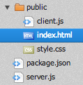

<!doctype html>
<html lang="en">
<head>
<title>try.luvit.io</title>
<link rel="stylesheet" href="style.css"/>
</head>
<body>
<h1>try.luvit.io</h1>
<script src="jam/require.js"></script>
<script src="client.js"></script>
</body>
</html>
A plain HTML5 page